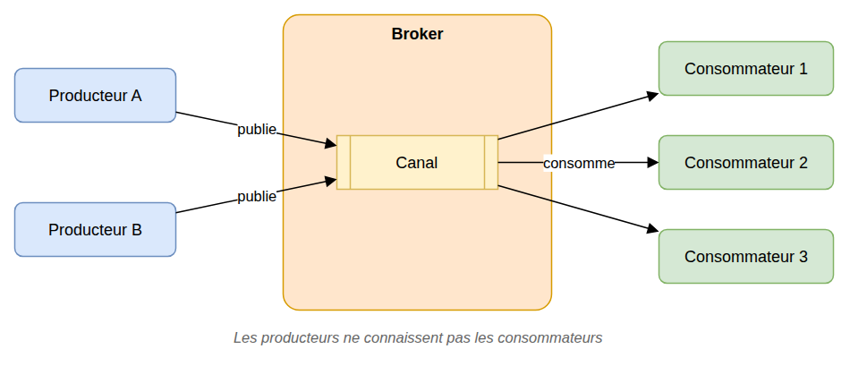
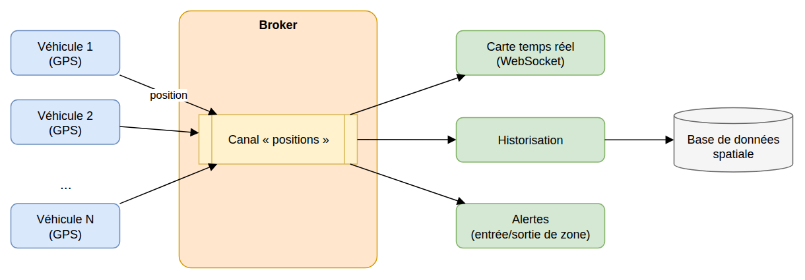
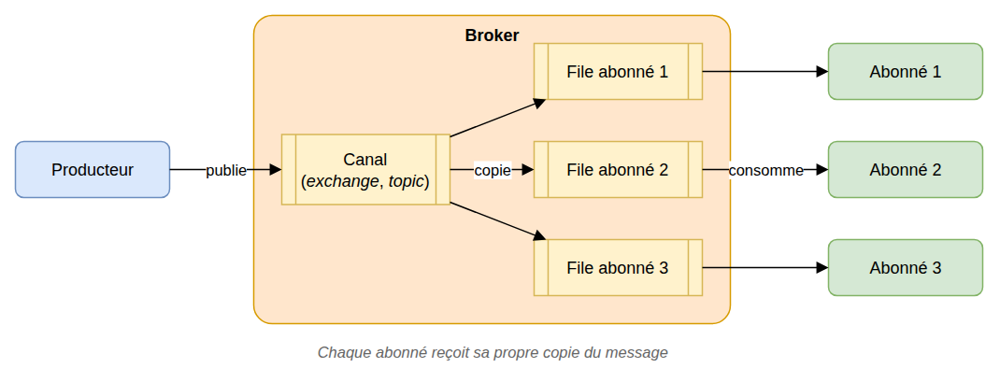
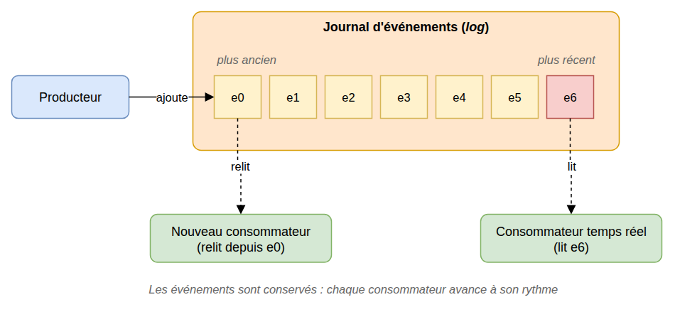

Architecture pilotée par les événements (EDA)¶
🤖 Rédaction assistée par IA.
Problème¶
Nous souhaitons faire communiquer les composants d'un système sans les coupler fortement :
- Un composant ne doit pas avoir à connaître tous les composants intéressés par ce qu'il produit
- Il ne doit pas avoir à attendre la fin d'un traitement long réalisé par un autre composant
- Il doit être possible d'ajouter de nouveaux traitements sans modifier les composants existants
Avec des appels directs (ex : appels HTTP d'un service à l'autre), chaque nouveau besoin implique la modification de l'appelant et la panne d'un composant se propage aux autres.
Cas d'école¶
Des véhicules équipés de GPS transmettent régulièrement leur position. Plusieurs traitements indépendants exploitent ces positions :
- Affichage sur une carte en temps réel
- Historisation dans une base de données spatiale
- Détection de l'entrée ou de la sortie d'une zone
- ...
Si chaque véhicule appelle directement ces traitements, l'ajout d'un nouveau traitement implique de modifier les véhicules et l'indisponibilité d'un traitement perturbe l'envoi des positions.
Solution¶
Dans une architecture pilotée par les événements (Event-Driven Architecture, EDA), les composants communiquent entre eux à l'aide de messages :
- Les producteurs publient des messages (ou événements) sans savoir qui les traitera
- Un intermédiaire (broker) reçoit, stocke et achemine ces messages
- Les consommateurs traitent les messages qui les concernent, à leur rythme

Ce principe est proche de celui du patron Observer, appliqué à l'échelle du système : l'intermédiaire supprime la dépendance directe entre producteurs et consommateurs, qui peuvent être déployés, mis à l'échelle et arrêtés indépendamment.
Dans notre cas d'école, les véhicules publient leurs positions sur un canal sans connaître les traitements et chaque traitement s'abonne à ce canal. Ajouter un nouveau traitement revient à ajouter un abonné, sans modifier ni les véhicules ni les autres traitements :

Variantes¶
Il existe deux styles d'implémentation des intermédiaires qui se distinguent par le devenir des messages une fois consommés :
- Avec la publication/abonnement, les messages sont supprimés une fois distribués aux abonnés
- Avec le flux d'événements, les messages sont conservés dans un journal que les consommateurs peuvent relire
Publication/abonnement (pub/sub)¶
Les consommateurs s'abonnent à un canal pour recevoir les messages. Chaque abonné reçoit sa propre copie de chaque message publié. Une fois consommé, le message disparaît : un abonné qui arrive plus tard ne recevra que les nouveaux messages.

Exemples : RabbitMQ (exchanges et queues), MQTT, Redis Pub/Sub...
Flux d'événements (event streaming)¶
Les événements sont journalisés dans un journal ordonné (log) et conservés. Chaque consommateur mémorise sa position dans le journal, et un consommateur peut relire les anciens messages (ex : nouveau traitement, reprise après incident, reconstruction d'un état).

Exemples : Apache Kafka, RabbitMQ Streams...
Mises en garde¶
- Cohérence à terme : les traitements étant asynchrones, l'état du système n'est pas immédiatement à jour partout
- Messages en double : la plupart des intermédiaires garantissent une livraison « au moins une fois ». Les consommateurs doivent être idempotents (traiter deux fois le même message ne doit pas poser problème)
- Ordre des messages : il n'est pas toujours garanti (en particulier avec plusieurs consommateurs en parallèle)
- Gestion des erreurs : il faut prévoir le cas des messages qui ne peuvent être traités (nouvelles tentatives, file des messages en erreur ou dead letter queue)
- Suivi et débogage plus difficiles : un traitement est réparti entre plusieurs composants. Il est nécessaire de tracer les messages (identifiant de corrélation, journaux centralisés)
- Format des messages : les messages forment un contrat entre producteurs et consommateurs qu'il convient de documenter et de faire évoluer avec précaution
- L'intermédiaire devient un composant critique du système : sa disponibilité et sa supervision doivent être assurées
- Il convient de réserver cette architecture aux cas qui le justifient : un simple appel direct reste préférable lorsqu'une réponse immédiate est attendue
Liens utiles¶
- learn.microsoft.com - Style d'architecture basée sur les événements
- learn.microsoft.com - Modèle Éditeur-Abonné
- www.rabbitmq.com - RabbitMQ Tutorials
- kafka.apache.org - Introduction
- martinfowler.com - What do you mean by "Event-Driven"?
- mborne.github.io/cours-archi-si-geo - Architecture pilotée par les événements (EDA)